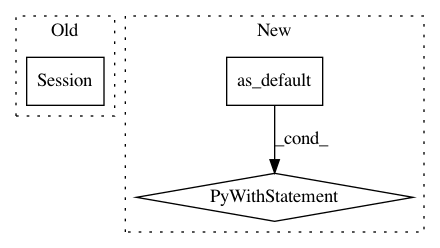

57591a23e73d3b2ca8132589e68c8a480f1686f5,baseline/tf/lm/model.py,LanguageModelBase,load,#Any#Any#,225
Before Change
if not tf.executing_eagerly():
_state = read_json(basename + ".state")
_state["sess"] = kwargs.pop("sess", tf.compat.v1.Session())
_state["model_type"] = kwargs.get("model_type", "default")
embeddings = {}
embeddings_dict = _state.pop("embeddings")
After Change
_state["sess"] = kwargs.pop("sess", create_session())
embeddings_info = _state.pop("embeddings")
with _state["sess"].graph.as_default():
embeddings = reload_embeddings(embeddings_info, basename)
for k in embeddings_info:
if k in kwargs:
_state[k] = kwargs[k]
_state["model_type"] = kwargs.get("model_type", "default")
model = cls.create(embeddings, **_state)
model._state = _state
do_init = kwargs.get("init", True)
if do_init:
init = tf.compat.v1.global_variables_initializer()
model.sess.run(init)
model.saver = tf.compat.v1.train.Saver()
model.saver.restore(model.sess, basename)
else:
_state = read_json(basename + ".state")
_state["model_type"] = kwargs.get("model_type", "default")
embeddings = {}
In pattern: SUPERPATTERN
Frequency: 3
Non-data size: 3
Instances
Project Name: dpressel/mead-baseline
Commit Name: 57591a23e73d3b2ca8132589e68c8a480f1686f5
Time: 2020-04-28
Author: dpressel@gmail.com
File Name: baseline/tf/lm/model.py
Class Name: LanguageModelBase
Method Name: load
Project Name: tensorflow/transform
Commit Name: 38e9391dcb5e8991a1a663601ce78bf7f08df474
Time: 2019-10-10
Author: tf-transform-dev@google.com
File Name: tensorflow_transform/tf_utils_test.py
Class Name: TFUtilsTest
Method Name: test_convert_sparse_indices
Project Name: googledatalab/pydatalab
Commit Name: 042392f84f37ec92f97d6b73af2e5957c6d6863e
Time: 2017-05-23
Author: brandondutra@google.com
File Name: solutionbox/code_free_ml/test_mltoolbox/test_analyze_data.py
Class Name: TestGraphBuilding
Method Name: _run_graph